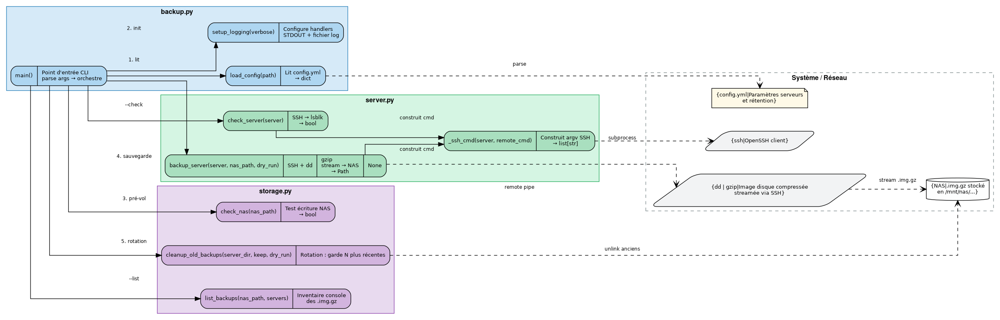
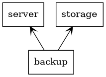

Structure UML
Diagramme modules et appels de fonctions
Vue complète des modules, fonctions et de leurs interactions avec les ressources système (SSH, NAS, fichier de configuration).


Lecture du diagramme :
Bleu — module
backup.py(orchestrateur / point d’entrée CLI)Vert — module
server.py(connexion SSH, imagerie disque)Violet — module
storage.py(gestion NAS, rotation)Gris pointillé — ressources externes (OpenSSH,
dd|gzip, NAS,config.yml)Flèches pleines → appels entre fonctions
Flèches pointillées → interactions avec les ressources système
Diagramme de dépendances entre packages
Dépendances d’import entre les trois modules Python.


backup importe server et storage ; server et storage
sont indépendants l’un de l’autre.
Régénérer les diagrammes
# Diagramme de packages (pyreverse + graphviz)
uvx --from pylint pyreverse -o dot -p sauvegardes \
--output-directory docs/_static/uml backup.py server.py storage.py
dot -Tpng docs/_static/uml/packages_sauvegardes.dot \
-o docs/_static/uml/packages_sauvegardes.png
# Diagramme modules/fonctions (source : docs/_static/uml/modules_fonctions.dot)
dot -Tpng docs/_static/uml/modules_fonctions.dot \
-o docs/_static/uml/modules_fonctions.png
# Rebuild HTML
uvx --with sphinx-rtd-theme --with sphinx-autodoc-typehints --with pyyaml \
--from sphinx sphinx-build -b html docs docs/_build/html